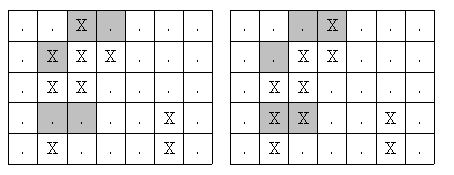

N(2 ≤ N ≤ 50)개의 그림이 있다. 각각의 그림은 5×7의 크기이고, 두 가지 색으로 되어 있다. 이때 두 가지의 색을 각각 ‘X’와 ‘.’으로 표현하기로 하자. 이러한 그림들이 주어졌을 때, 가장 비슷한 두 개의 그림을 찾아내는 프로그램을 작성하시오. 두 개의 그림에서 다른 칸의 개수가 가장 적을 때, 두 개의 그림이 가장 비슷하다고 하자.

예를 들어 위와 같은 두 개의 그림이 주어졌을 때, 색칠한 부분이 서로 다르게 된다. 위의 그림은 5개의 칸이 서로 다르다. 이와 같이 서로 다른 칸의 개수가 가장 작은 경우를 찾는 것이다.
첫째 줄에 N이 주어진다. 다음 5×N개의 줄에 7개의 문자로 각각의 그림이 주어진다.
첫째 줄에 가장 비슷한 두 그림의 번호를 출력한다. 그림의 번호는 입력되는 순서대로 1, 2, …, N이다. 번호를 출력할 때에는 작은 것을 먼저 출력한다. 입력은 항상 답이 한 가지인 경우만 주어진다.
Input:
3
..X....
.XXX...
.XX....
.....X.
.X...X.
...X...
..XX...
.XX....
.XX..X.
.X...X.
XX.....
X......
XX...XX
XXXX.XX
XXX..XX
Output:
1 2